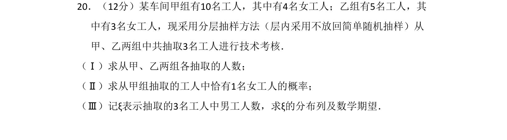
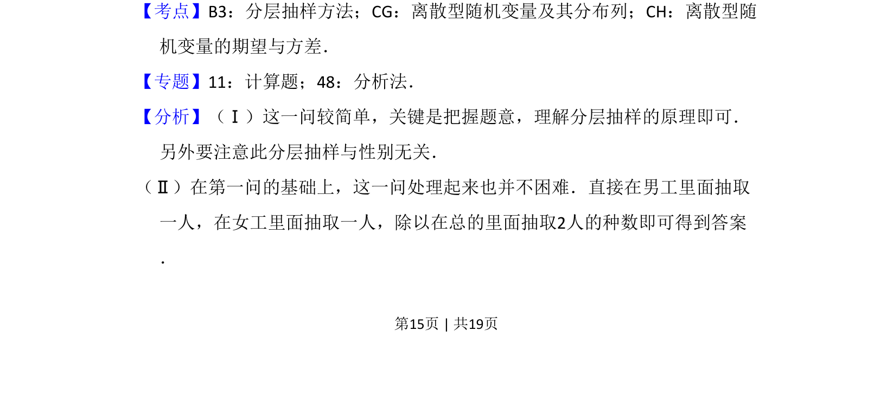
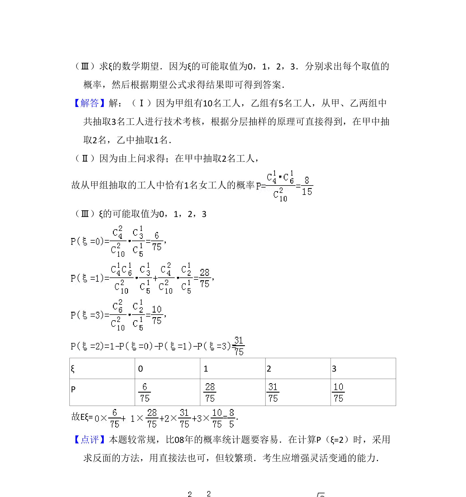

考点：分层抽样 古典概型 离散型随机变量分布列 数学期望

该题考查分层抽样方法、组合概率计算以及离散型随机变量分布列与期望的求解。


📄 原 PDF 第 15 页：
素材/真题/吉林/2008-2024·（吉林）数学高考真题/2009年高考数学试卷（理）（全国卷Ⅱ）（解析卷）.pdf
20．（12分）某车间甲组有10名工人，其中有4名女工人；乙组有5名工人，其 中有3名女工人，现采用分层抽样方法（层内采用不放回简单随机抽样）从 甲、乙两组中共抽取3名工人进行技术考核． （Ⅰ）求从甲、乙两组各抽取的人数； （Ⅱ）求从甲组抽取的工人中恰有1名女工人的概率； （Ⅲ）记ξ表示抽取的3名工人中男工人数，求ξ的分布列及数学期望．
【考点】B3：分层抽样方法；CG：离散型随机变量及其分布列；CH：离散型随 机变量的期望与方差．菁优网版权所有 【专题】11：计算题；48：分析法． 【分析】（Ⅰ）这一问较简单，关键是把握题意，理解分层抽样的原理即可． 另外要注意此分层抽样与性别无关． （Ⅱ）在第一问的基础上，这一问处理起来也并不困难．直接在男工里面抽取 一人，在女工里面抽取一人，除以在总的里面抽取2人的种数即可得到答案 ．